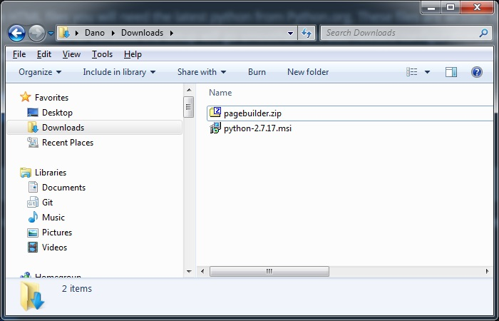
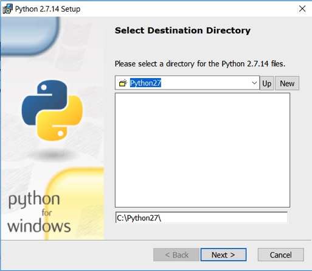
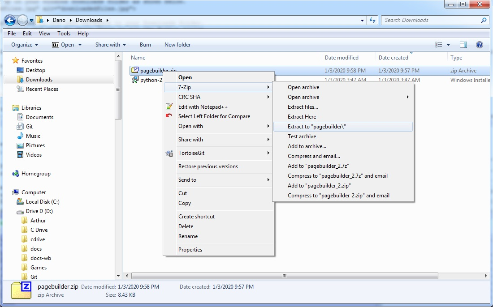
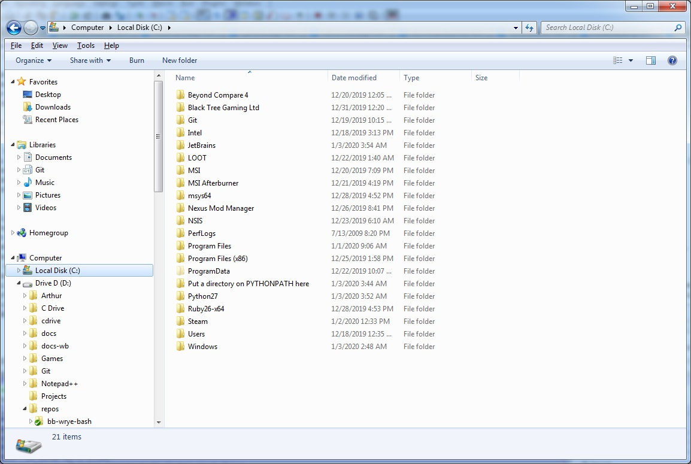
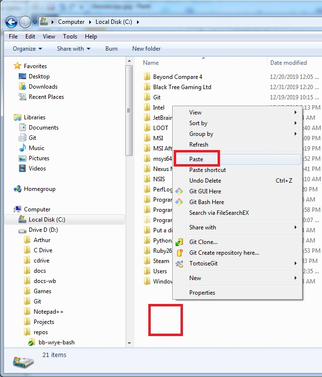

• Do you have Wrye Bash related material that you would like to submit to this site? Are HTML and css style sheets over your head? If you can install Python, run a python script from a command line, and edit a text file then you can generate a page ready for use with this Wiki.
• Wrye has said in some of his Wrye Mash files that he built all of his pages using this system. I would presume that Wrye Musings was done this way as well. On this page you will be shown the Wrye Text format and given a download of a python script to run and convert your Wrye Text files to HTML that can be used on this site.
• NOTE: You do not need to know Python to do this. All Python scripts will be provided. You only need to follow these instructions and some basic computer knowledge.
• Content should be Wrye related and related to Wrye Mash, and Wrye Bash programs. This can include BAIN installers for mods that do not currently have any or any other content that users could benefit from when using Wrye Bash.
• To generate the HTML files you will need the latest python from Python.org. These files are written for 2.7.x and the current Python 2.7.17 will work just fine. The link is for the 32 bit version. Please download that because the setup will go smoother and add needed configurations to your computer to run the python scripts provided.
• Below is a link to Python 2.7.17 and a link to the pagebuilder script and sample file you can generate right away to see it working.
• Download the pagebuilder.zip
You may want to cut this section out if your readme is very short. Also, you can make the contents deeper by setting CONTENTS to 2.
• Overview
• Where are the files I just downloaded?
• Installing Python script for use
• Versions
• 0.00 Initial Release [1/21/2007]
• Syntax
• Css
• Bullets
• Styles
• Links
• Html
• License: WML 1.0 Modify and Redistribute, Share Alike
• Credits
• Contact
• The pagebuilder.zip contains all the files shown. However, in the future it may contain other files as well. As the file changes, the file name will have a version number added to it that you can compare to your copy. Then you will know if you have the most recent files.
• The files usually end up in your windows Downloads folder as shown below.
• Open your windows explorer and on the left navigate to your Downloads folder.
• First you will install Python and then be shown where to put the Python scripts and example files.
• Your version of python will be different then show here. What is important is the install location. Leave it at the default settings so that you can follow the instructions for building HTML files with Python.
• The Python installation will be very simple, just click next and leave all the default settings.
• Once installed Python you will need to unzip the python script and sample text file used to build the html file.
• These are really not installed on your system automatically so we will be copying them.
• Windows should have a way to open this type of zip file itself but if needed you can download 7zip from 7-zip.org. It is safe, free and, easy to use.
• To unzip file files simply right click on them and choose Extract to "pagebuilder\"
• Now we will be copying the files to a more convenient location to run them easily. If left in the Downloads folder or copied onto the Desktop to run the script means you will have to type in command similar to this. C:\Python27\python.exe C:\Users\Dano\Downloads\pagebuilder\wtxt-wiki.py genHtml "Mash Readme Template.txt". While not difficult we will simplify that some to make it easier.
• Right click the pagebuilder folder and, choose Copy
• Navigate to the C Drive
• Right click in an empty space and, choose Paste.
Version notes go here.
• Fixed global thermonuclear destruction bug. My bad.
• Yay! Finally got it out the door!
Mash's autoconversion syntax is described here. Delete this and all other italicisized instructions before distributing your readme.
To trigger Wrye Mash's autoconversion...
• Choose the txt version of the file in Mash's Doc Browser.
• First line of txt file must look like = Title ====#. Note in particular, the = at the start and the single # character at the end!
• View the document in the Doc Browser. If Mash sees that the html is older than the text file, it will do the conversion. Note that this means that you can edit the text file in an external text editor and still get autoconversion.
Copy this template to Morrowind\Data Files\Docs\My Readme Template.txt and modify as desired. That will become your default template.
The default styles can be replaced by specifying css file in a CSS tag. Note that:
• Css file must be on a line by itself.
• Css file is not linked to, but is instead included on compilation.
• Css must not contain any html markup tags (not even comments).
• Directory specification is not allowed.
• Css file must be present either in same directory as source document or in the Morrowind\Data Files\Docs directory. If it's present in both, then the version in the current directory will be used.
• If no css file is specified, then a default, sand colored style set will be used.
• You can supply your own css files or one of your own. If you use your own, please give a it unique name so that it won't overwrite css files by other modders. Included css files are:
• wtxt_teal.css
• A good place to put the CSS tag is at the end of the document.
Level of heading is determined by number of leading '='s. Trailing equal signs are ignored.
• Bullets1
• Bullets 2
• Bullets 3
• Bullets 4
+ Alternate bullet char
o Alternate bullet char
Invisibile bullet char
• Italic
• Bold
• BoldItalic
• External Link: http://wrye.ufrealms.net or Wrye Musings
• Internal Link: Reuse and Credits or Reuse and Credits.
• All section headers can be linked to by compressing the text of the header together (i.e., by stripping out all non alphabetical characters).
• If you use the second form the link is automatically generated from the text of the link.
• This is font.blackfont
• This is font.bluefont
• This is font.brownfont
• This is font.cyanfont
• This is font.dkgrayfont
• This is font.grayfont
• This is font.greenfont
• This is font.ltbluefont
• This is font.ltgrayfont
• This is font.ltgreenfont
• This is font.orangefont
• This is font.pinkfont
• This is font.purplefont
• This is font.redfont <- this is really a different value
• This is warning red font.warningred <- this is really a different value
• This is darkredfont red font.darkredfont <- this is really a different value
• This is ltredfont red font.ltredfont <- this is really a different value
• This is font.tanfont
• This is font.whitefont
• This is font.yellowfont
• Html tags work fine
• code tag has special formatting
• pre tag is useful for code
begin widgetScript short counter end
These will form one
line in the compiled html.
+ This will form one continuous
bullet item.
Blank lines can be used as spacers:
Optional. Licenses are particularly useful for keeping mods alive after the original author(s) has left the scene and/or the original download server has gone down. The default license below is fairly generous. You can find other licenses at Wrye Modding Licenses 1.0 or you may wish to make your own. You can skip a license altogether, but this may result in your mod becoming unavailable eventually if you can't be contacted.
• You are free to redistribute this work in unmodified form.
• You are free to modify and re-distribute this work, so long as you: 1) give the author(s) credit proportional to their contribution to the final work, 2) distribute the final work under the same terms, and 3) make artistic resources included with the final work available under the same terms as below.
• Artistic resources (meshes, textures, sounds, etc.) included with this work may be included in unmodified form with modified versions of this work, so long as their authors are given credit proportional to their contribution to the final work. Note that artistic resources may not be modified, or extracted from this work, unless permission is given elsewhere.
While the license above allows modification and redistribution, I'd prefer to keep it under my control for now. So, please try to contact me before modifying or redistributing it.
Optional. If the mod has resources, and they are under a different license, note that here.
List who did what here. E.g...
• Bethesda, for creating a great game!
Contact info. Email address, website, preferred forums, etc.